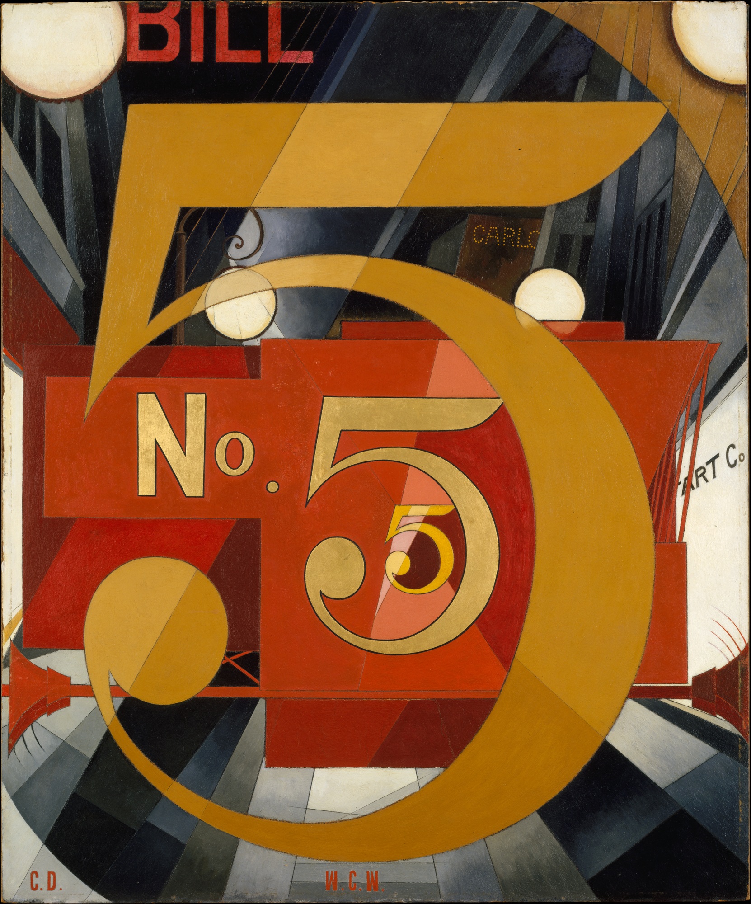

大、中、小三个数字沿中心递减，把空间拉远；斜线、车身切面与圆弧又将视线弹回。车辆在退，感官在迎面相撞。
红橙与赭金是近似暖色，持续前冲；蓝黑、钢灰降明度后退。圆灯的乳白只占 5%，却成为雨夜最亮的闪点。
石墨搭起精密骨架，油彩铺平色面，墨线收紧边缘，金箔让数字随角度改变亮度。立体主义的碎片、未来主义的动势与精准主义的硬边在此汇合。
事实：Charles Demuth（1883–1935）以朋友 William Carlos Williams 的诗《The Great Figure》为引，创作了这幅不画脸的“海报肖像”；它属于 1924–1929 年的八幅系列之一。
上句为“每日艺术”的观看分析，并非作者原话。
Charles Demuth，《I Saw the Figure 5 in Gold》，1928，油彩、石墨、墨、金箔 / Upson 纸板，The Metropolitan Museum of Art，49.59.1。图像：Wikimedia Commons 文件页，Public Domain Mark 1.0；不同法域与用途请复核。图片版权归原作者及相关权利人；赏析为“每日艺术”原创分析。